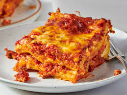

Lasagna

Homemade Lasagna
This recipe shows and describes how this delicious home made lasagna was made.
Ingredients
These are the ingredients you'll need to make this top-rated homemade lasagna recipe:
- Meat
- Onion
- Canned tomatoe
- Parsley and garlic
- Sugar
- Spices and seasonings
- Noodles
- Cheese
- Eggs
Steps
Below are the steps to follow to make a delicious homemade lasagna;
- Prepare the Meat Sauce: In a large skillet, brown the ground beef and pork over medium-high heat. Add chopped onions and garlic; cook until translucent. Stir in crushed tomatoes, tomato sauce, and herbs (basil, oregano, parsley).
- Simmer: Reduce heat to low and let the sauce simmer for at least 30 minutes to develop flavor.
- Prepare Noodles: While the sauce simmers, bring a large pot of salted water to a boil. Cook lasagna noodles for 8–10 minutes until al dente (firm), then drain and rinse with cold water to stop cooking.
- Make the Cheese Filling: In a bowl, combine the ricotta (or cottage cheese), parmesan cheese, one beaten egg, and parsley.
- Assemble the Lasagna (9x13 Dish):
Home